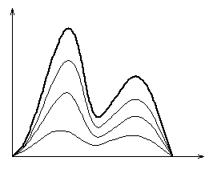
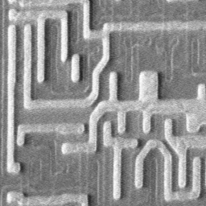
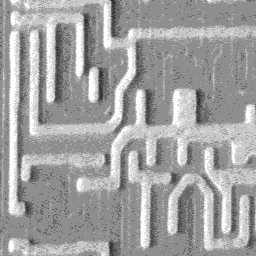

Cette section est basée sur l'article qui décrit l'algorithme de seuillage aléatoire : "Random-sampling Thresholding: A New Approach to Multilevel Thresholding" par PY Ying et LH Chen, Signal Processing, no. 34 p. 311-322, 1993.
Nous ne ferons dans cette partie que résumer l'article. Les résultats exprimés ici sont donc ceux des auteurs, notament à propos de la qualité de l'algorithme. Notre discussion sera faite dans la section suivante. Par ailleurs, nous vous renvoyons à cet article pour une description précise de l'algorithme ainsi que pour des formulations claires, car HTML ne possède pas encore de mode mathématique.
Le seuillage d'image est très utilisé pour la segmentation des images. Intuitivement on comprend bien que différents objets d'une image sont souvent caractérisés par une plage de niveaux de gris particulière. On distingue deux types de seuillage : le seuillage à deux niveaux, qui répartit les pixels de l'image en deux groupes selon que leur niveau de gris est au-dessus ou au-dessus d'un certain seuil, et le seuillage multi-niveaux qui sépare les pixels en plusieurs groupes. Nous nous intéressons ici à ce deuxieme type qui est beaucoup plus difficile à mettre en oeuvre à cause du grand nombre de degrès de liberté.
De nombreuses techniques de seuillage ont été mises au point ; la plupart d'entre elles nécessitent l'optimisation d'une certaine fonction critère (par exemple maximisation a posteriori de l'entropie pour mesurer l'homogénéité des classes [Pun] ou minimisation du taux d'erreur de classification [Kittler], ...). Toutes ces méthodes se heurtent au même problème : la complexité de calcul croît de manière exponentielle avec le nombre de seuils. D'autres méthodes de seuillage tentent de préserver certaines propriétés de l'image à traiter (par exemple le moment [Tsai]). Mais avec ces techniques, il n'existe pas de solution analytique dès que le nombre de seuils est supérieur à 3. Enfin, dans toutes ces méthodes, le nombre de classes doit être spécifié au départ, alors que dans la plupart des applications, ce nombre est inconnu.
La méthode de Lim et Lee résout ces problèmes : on lisse l'histogramme de l'image par convolution avec une gaussienne puis on dérive deux fois pour localiser les vallées et donc les seuils. Mais alors, c'est le choix d'une bonne gaussienne (c'est à dire d'une gaussienne de déviation adaptée ) qui pose problème.
La méthode de seuillage aléatoire (Random Sampling Thesholding Algorithm, ou RSTA) évite, comme la méthode de Lim, les problèmes classiques et n'en ajoute pas d'autres. En outre, elle donne des résultats comparables à ceux de Lim.
La notion de base est celle du RSH (Random sampling histogram), c'est à dire l'histogramme d'un certain nombre de pixels tirés aléatoirement et uniformément sur l'image originale.
On se base sur la constatation suivante : le RSH et l'histogramme de l'image complète ont a la même allure, à une homothétie près (voir la figure). Et cette homothétie fait disparaître un certain nombre de détails, certain étant ici fonction du facteur de l'homothétie, donc du nombre de pixels tirés pour calculer le RSH.
L'idée va donc être ici de partir avec des seuils grossiers (Coarse Threshold, ou CT), de faire "pousser" le RSH sous ces seuils en tirant de nouveaux échantillons, et de mettre à jour les CT au fur et à mesure en fonction de ce RSH. Cela peut paraître simple, mais ce n'est pas trivial à mettre en oeuvre.
|  |
| L'histogramme d'une image et ses différents RSH |
Il s'agit donc d'une méthode itérative. Il ne nous semble pas judicieux d'entrer dans les détails de l'algorithme ici. Nous allons nous contenter de détailler le points qui nous semblent essentiels. Pour le reste, vous pouvez consulter notre implémentation commentée de cet algorithme en annexe.
Par cette méthode en fait, un seuil est arrêté lorsque les densités des deux côtés des seuils sont presque les mêmes.
On peut être tenté d'initialiser le processus avec un histogramme non vide. On peut par exemple tirer 500, 1000 ou 3000 échantillons au hasard et construire un RSH initial.
L'expérience montre que cela n'est pas nécessaire : on aboutit en effet aux mêmes résultats avec et sans initialisation de l'histogramme et à une vitesse comparable de surcroît.
Le nombre de seuils initial peut être donné par la formule Nt= (b-a)/AV, où a et b sont les niveaux de gris extrémaux de l'image et AV est la moyenne du gradient morphologique sur l'image. Le nombre final de seuils est inférieur ou égal à Nt.
Si l'on veut essayer d'obtenir un plus grand nombre de seuils par le même algorithme, il suffit de réappliquer l'algorithme dans la région de niveaux de gris où l'on veut trouver plus de seuils avec AV=AV/2.
On peut aussi choisir Nt et imposer AV.
Plus Na est choisi petit, moins on trouvera de seuils, puisque si Na est petit, on perd plus d'information entre le GLH et le RSH. La valeur conseillée dans l'article est Na= 0.002*N/Nt, où N est le nombre de pixels dans l'image.
On a choisi de tirer les échantillons au hasard. On pourrait aussi utiliser la méthode de Cook selon laquelle deux échantillons ne doivent pas être trop près l'un de l'autre. On évite ainsi le risque de voir certaines régions "oubliées" et d'autres très souvent choisies.
Dans tous les cas examinés, on tire à peu près la moitié des pixels de l'image avant d'arriver à l'arrêt de l'algorithme.
L'expérience montre que la méthode de Cook ne donne pas de meilleurs résultats et même qu'elle ne peut pas être utilisée lorsqu'on cherche plus de seuils dans une zone de niveaux de gris restreinte, car elle limite la résolution de l'image échantillonnée.
Trois images (LENA, PEPPER et MILKDROP) ont été testées par les deux méthodes : Lim et seuillage aléatoire. L'observation de ces résultats amène les réflexions suivantes :
Pour Lena on trouve les mêmes résultats avec les 2 méthodes si on fixe la variance de Lim à 7. On garde donc cette valeur pour les autres tests.Si on réapplique l'algorithme de RSTA dans les zones de grande variance, le résultat qu'on trouve sur pepper et milkdrop est plus précis. La différence pixel à pixel avec l'image originale est meilleure pour le RSTA dans le cas des 2 premières images, et moins bonnes dans le cas de milkdrop, tout en restant d'ordre comparable.
L'algorithme de RSTA semble donc globalement meilleur que celui de Lim, à en croire ses auteurs. Nous avons tout de même voulu vérifier en l'implémentant nous même.
Avec la plupart des méthodes de seuillage, on doit prédéfinir le nombre de seuils, les calculs sont souvent lourds et on n'obtient pas toujours de solution. Avec la méthode de Lim, le nombre de seuils est déterminé automatiquement et la complexité des calculs reste raisonnable. Mais le choix de la déviation de la gaussienne reste un problème : il est difficile de déterminer sa valeur en fonction de l'image.
La méthode de seuillage aléatoire évite ces deux écueils. Elle donne un nombre non connu a priori de seuils, sa complexité reste apparement raisonnable et tous ses paramètres sont calculés directement sur l'image. Serait-ce trop beau pour être vrai ?
Premier problème : l'article n'est pas très clair sur la supression des CT qui n'ont jamais gagné à la fin de l'algorithme. Et de toute facon, les seuils minimaux et maximaux trouvés seront parfois assez peu significatifs. Ce n'est pas un problème très grave, mais il faut prévoir un post-traitement pour l'éliminer.
Il y a un problème plus grave : dans le cas où l'un des CT est au départ dans une zone où il y a très très peu de pixels, il ne gagnera presque jamais. Donc son critère d'arrêt peut n'être atteint qu'après un très grand nombre de tirages, du fait qu'il est fonction du nombre de victoires. C'est d'autant plus dommageable que ce seuil ne sera jamais significatif. C'est pourquoi il nous parait important d'ajouter un critère d'arrêt supplémentaire : à la fin de chaque itération, chaque noeud qui n'a gagné qu'un nombre petit de fois par rapport au nombre d'itérations effectuées est arrêté, voir éliminé ("petit" étant bien sur à définir).
Mais le principal problème avec cet algorithme est qu'il est non déterministe. Cela rend impossible l'évaluation de sa complexité et laisse la porte ouverte à beaucoup de cas pathologiques. Mais surtout cela suppose que l'on dispose d'un générateur aléatoire uniforme, ce qui n'est pas évident.
Vous pouvez télécharger un version "tarée" et "gzipée" de nos codes sources ici. Lisez le READ_ME pour plus de précisions.
Notre implémentation est assez simple : nous avons décidé de représenter les CT par une liste chainée, chaque noeud contenant des informations sur son état (winning time, AA, ...). A partir de là, l'algorithme est assez séquentiel. Le résultat est donné sous forme de tableau de short, la fin du tableau étant donné par une constante non-significative. Notre soucis à été dès le départ de concevoir un module le plus transparent possible qui puisse être ensuite réutilisé facilement dans un cadre plus large.
Malheureusement, malgrés nos efforts et notre semaine de retard, nous ne sommes pas arrivés à obtenir des résultats corrects.
Voici ce que nous obtenons :
|  |  |
| Image initiale (vlsi.ima) | Image obtenue (les classes sont mises à leur borne inf.) |
En fait les seuils finaux sont quasiment égaux à leur valeur d'initialisation. Le problème peut venir de plusieurs sources :
Nous vous rendons donc un rapport incomplet car manquant d'illustrations, mais nous espérons avoir satisfait aux exigeance de l'exercice par notre compréhension de l'algorithme et de son utilité.